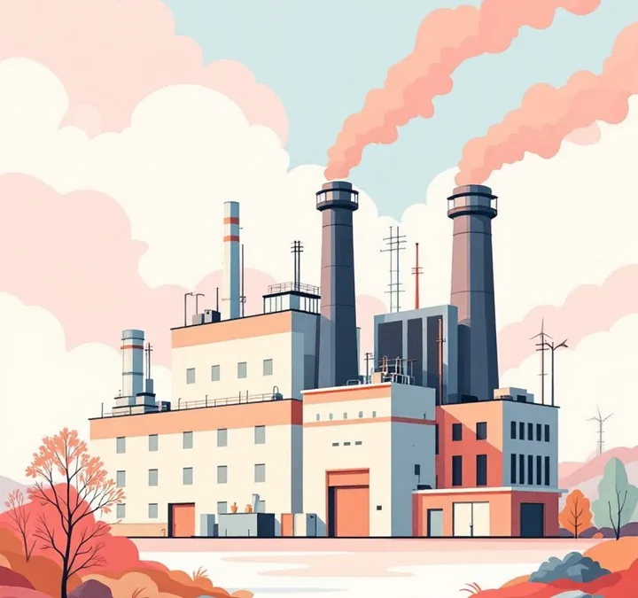
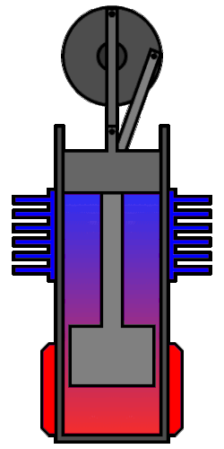

An end-to-end ecosystem for industrial waste-heat recovery - energy auditing, Stirling-engine installation, and intelligent monitoring. Zero-CapEx options available.

Across Indian industry, a quarter of every rupee spent on energy escapes as heat - vented through stacks, cooling towers, and quench loops. It's the largest untapped power reserve on every factory floor.
Heat-intensive plants in cement, glass, ceramics, and chemicals routinely exhaust streams between 300 °C and 1200 °C directly to atmosphere. For a mid-size plant, the recoverable energy value can exceed ₹100 crore over the lifetime of the asset.
Typical heat-intensive plants waste 20–30% of their total energy input as thermal emissions - energy you've already paid for.
Cement kilns, glass furnaces, and refinery stacks push exhaust between 300 °C and 1200 °C straight into the atmosphere.
For a mid-size cement or steel plant, the recoverable energy value can exceed ₹100 crore over a typical asset lifetime.
"Energy is the key to the prosperity of any nation. When we ensure energy security, we ensure the nation's security." - Dr. A. P. J. Abdul Kalam
The Stirling engine was invented in 1816 - decades before the internal combustion engine. It runs on a closed loop of inert gas, heated externally. No combustion inside the cylinder. No contact between fuel and working fluid.
For a century it was overshadowed by steam and IC. Today, with modern materials and precision manufacturing, its fundamental advantages make it the cleanest, simplest way to turn industrial waste heat into rotating power.

The Stirling cycle is a closed loop: the same gas is heated, expanded, cooled, and compressed - over and over - with the regenerator recycling heat between strokes. Higher thermal efficiency than a simple Otto cycle; far fewer moving parts than a steam turbine.
Gas in the hot zone absorbs heat from industrial exhaust. It expands, pushing the power piston. This is where work is produced.
Hot gas is pushed through the regenerator - a dense mesh that captures and stores its heat. The gas exits cooler; the regenerator stores the energy for re-use.
Cooled gas is compressed in the cold zone, rejecting residual heat to the cooling circuit. Low-temperature compression requires less work than high-temperature - that's where the net output comes from.
Compressed gas is pushed back through the regenerator, reclaiming the heat stored in step 2. It arrives at the hot zone already partially reheated. The cycle restarts.
Inferno is not a single-product company. We cover the full lifecycle of industrial waste-heat recovery - from initial audit to long-term monitoring - with flexible commercial models that match your plant's capital position.
Every engagement begins with a site thermal survey. We map your exhaust streams, quantify recoverable energy in kW-equivalents, and produce a plant-specific financial model - before any hardware conversation.
We design, manufacture, install, and service Stirling-engine waste-heat recovery systems sized to your plant's thermal profile. Two commercial models, so every customer can participate.
Our monitoring dashboard is built to be vendor-agnostic. Whether you run an Inferno system or a legacy third-party WHR unit, a handful of sensors feeds real-time insight on performance, uptime, and emissions avoided - without ripping and replacing existing instrumentation.
Why plants choose Inferno - lower electricity costs from day one, direct progress on BEE PAT targets and CPCB emission norms, measurable Scope 1 & 2 reductions attributable to your site for ESG reporting, and no technology-adoption risk under the EaaS model. Under Model B, Inferno retains the carbon credits as the mechanism that funds the zero-CapEx offer - but the on-site emissions reductions remain yours to report.
Direct reduction in purchased electricity. Zero CapEx under EaaS, or accelerated depreciation under ownership.
Turn regulatory pressure into measurable progress. Every kWh recovered is documentation-grade.
Verifiable impact that holds up to auditors, investors, and enterprise customers.
| Metric | At ₹8/kWh grid | At ₹10/kWh grid | At ₹12/kWh grid |
|---|---|---|---|
| Annual generation | 40,000 kWh | 40,000 kWh | 40,000 kWh |
| Annual bill savings | ₹3.20 L | ₹4.00 L | ₹4.80 L |
| Simple payback (pilot build) | ~3.9 yr | ~3.1 yr | ~2.6 yr |
| CO₂ avoided (annual) | ~32 tCO₂ | ~32 tCO₂ | ~32 tCO₂ |
We focus on mid-size industrial plants - the segment under-served by large, CapEx-heavy waste-heat solutions. Every site starts with a free thermal assessment.
Mid-size kilns lose enormous thermal energy through preheater exhaust and clinker cooler vents. Ideal match for Stirling recovery.
Furnaces operate at very high temperatures with continuous thermal loads. Large amounts of high-grade waste heat are released through flue gases. High WHR Potential.
Clusters like Morbi (ceramics) and the Hyderabad textile belt have hundreds of mid-size units with near-identical heat profiles - perfect for modular deployment.
Mid-size refineries and specialty chemical plants generate waste heat across multiple streams - steam reformers, crackers, regenerators.
Mechanical engineer with a decade working on heat engines, combustion, and sensor-integrated industrial systems. Formerly engine research at Toyota Motorsport, hydrogen combustion at KIT, and currently Head of Engineering, Software & Product at Synergy Measurement Technologies - delivering systems for DRDO, HAL, and BEL.
Inferno is the culmination of a long-held thesis: that waste-heat recovery fails in India not because of physics, but because of the wrong commercial model. The full-ecosystem approach - audit, install, monitor - fixes that.
The assessment is free, takes under two hours on-site, and ends with a clear financial and carbon model for your plant. No obligation, no procurement cycle.
Share your plant's heat profile through a short survey. We respond within 48 hours with a site-visit proposal.
Start survey →Partnerships, press, investor conversations. We reply within two business days.
Contact us →Engineering dossier covering thermodynamic basis, efficiency envelope, and deployment architecture.
Download PDF →